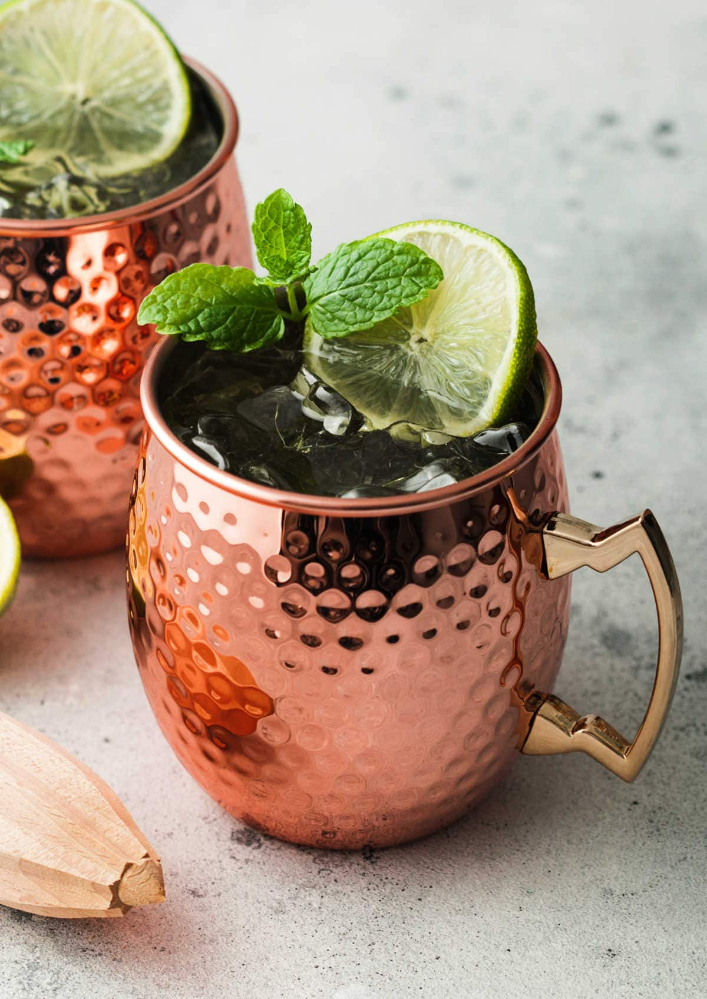

Moscow Mule

Description
The Moscow Mule is a classic vodka-based cocktail that is popular for good reason: It’s delicious, refreshing and a snap to make. The simple cocktail combines vodka with ginger beer and lime. It’s a no-tools-required drink that is built right in the mug.
Ingredients
- 2 ounces vodka
- 1/2 ounce lime juice, freshly squeezed
- 3 ounces ginger beer, chilled
- Garnish: lime wheel
Steps
- Fill a Moscow Mule mug (or highball glass) with ice, then add the vodka and lime juice.
- Top with the ginger beer.
- Garnish with a lime wheel.
Home